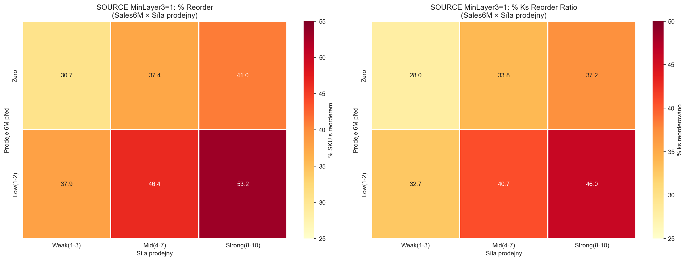
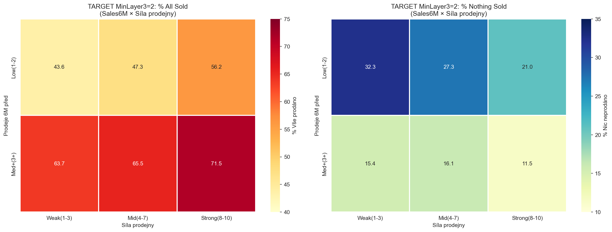
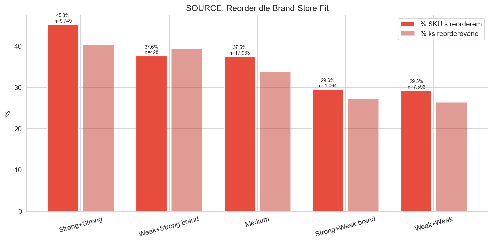
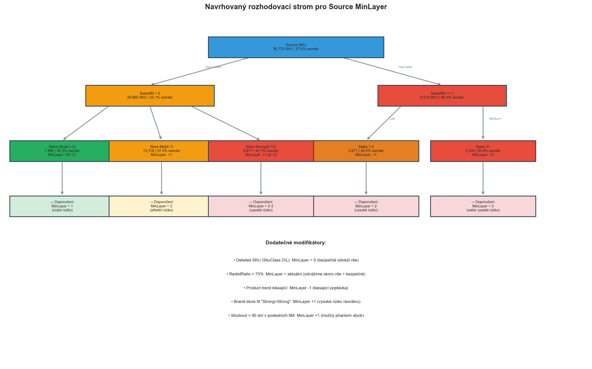

CalculationId=233 | EntityListId=3 | Vygenerováno: 2026-03-22 02:51
Klíčová tabulka: jak se chovají source SKU v závislosti na třech dimenzích.

| MinLayer3 | Sales 6M | Síla prodejny | SKU | S reorderem | % SKU reorder | Reorder ks | Redistrib. ks | Qty ratio |
|---|---|---|---|---|---|---|---|---|
| 0 | Low(1-2) | Mid(4-7) | 69 | 2 | 2.9% | 2 | 99 | 2.0% |
| 0 | Low(1-2) | Strong(8-10) | 33 | 7 | 21.2% | 8 | 51 | 15.7% |
| 0 | Low(1-2) | Weak(1-3) | 22 | 0 | 0.0% | 0 | 28 | 0.0% |
| 0 | Med+(3+) | Mid(4-7) | 4 | 0 | 0.0% | 0 | 7 | 0.0% |
| 0 | Med+(3+) | Strong(8-10) | 13 | 3 | 23.1% | 5 | 30 | 16.7% |
| 0 | Med+(3+) | Weak(1-3) | 2 | 0 | 0.0% | 0 | 3 | 0.0% |
| 0 | Zero | Mid(4-7) | 701 | 59 | 8.4% | 66 | 841 | 7.8% |
| 0 | Zero | Strong(8-10) | 413 | 28 | 6.8% | 29 | 477 | 6.1% |
| 0 | Zero | Weak(1-3) | 452 | 8 | 1.8% | 11 | 525 | 2.1% |
| 1 | Low(1-2) | Mid(4-7) | 1,476 | 685 | 46.4% | 861 | 2,116 | 40.7% |
| 1 | Low(1-2) | Strong(8-10) | 1,535 | 816 | 53.2% | 1,048 | 2,280 | 46.0% |
| 1 | Low(1-2) | Weak(1-3) | 660 | 250 | 37.9% | 297 | 908 | 32.7% |
| 1 | Zero | Mid(4-7) | 12,617 | 4,717 | 37.4% | 5,335 | 15,788 | 33.8% |
| 1 | Zero | Strong(8-10) | 8,264 | 3,390 | 41.0% | 3,922 | 10,536 | 37.2% |
| 1 | Zero | Weak(1-3) | 7,413 | 2,279 | 30.7% | 2,515 | 8,970 | 28.0% |
| 2 | Low(1-2) | Mid(4-7) | 541 | 276 | 51.0% | 354 | 862 | 41.1% |
| 2 | Low(1-2) | Strong(8-10) | 787 | 397 | 50.4% | 562 | 1,311 | 42.9% |
| 2 | Low(1-2) | Weak(1-3) | 216 | 96 | 44.4% | 120 | 326 | 36.8% |
| 2 | Med+(3+) | Mid(4-7) | 286 | 162 | 56.6% | 259 | 563 | 46.0% |
| 2 | Med+(3+) | Strong(8-10) | 780 | 441 | 56.5% | 709 | 1,521 | 46.6% |
| 2 | Med+(3+) | Weak(1-3) | 70 | 30 | 42.9% | 48 | 133 | 36.1% |
| 3 | Med+(3+) | Mid(4-7) | 64 | 32 | 50.0% | 112 | 303 | 37.0% |
| 3 | Med+(3+) | Strong(8-10) | 343 | 159 | 46.4% | 335 | 1,034 | 32.4% |
| 3 | Med+(3+) | Weak(1-3) | 9 | 4 | 44.4% | 17 | 42 | 40.5% |

| MinLayer3 | Sales 6M | Síla prodejny | SKU | Nic neprodáno | Vše prodáno | % Nic | % Vše | Přijato ks | Prodáno ks | Zbývá ks |
|---|---|---|---|---|---|---|---|---|---|---|
| 1 | Low(1-2) | Mid(4-7) | 1,113 | 448 | 661 | 40.3% | 59.4% | 1,124 | 1,032 | 477 |
| 1 | Low(1-2) | Strong(8-10) | 998 | 345 | 648 | 34.6% | 64.9% | 1,006 | 1,178 | 360 |
| 1 | Low(1-2) | Weak(1-3) | 467 | 233 | 234 | 49.9% | 50.1% | 469 | 336 | 236 |
| 1 | Zero | Mid(4-7) | 982 | 386 | 562 | 39.3% | 57.2% | 1,057 | 880 | 633 |
| 1 | Zero | Strong(8-10) | 790 | 251 | 525 | 31.8% | 66.5% | 820 | 950 | 343 |
| 1 | Zero | Weak(1-3) | 380 | 166 | 204 | 43.7% | 53.7% | 407 | 306 | 279 |
| 2 | Low(1-2) | Mid(4-7) | 8,674 | 2,370 | 4,100 | 27.3% | 47.3% | 9,588 | 14,021 | 6,760 |
| 2 | Low(1-2) | Strong(8-10) | 9,421 | 1,983 | 5,299 | 21.0% | 56.2% | 10,409 | 18,897 | 5,974 |
| 2 | Low(1-2) | Weak(1-3) | 3,093 | 1,000 | 1,348 | 32.3% | 43.6% | 3,438 | 4,470 | 2,673 |
| 2 | Med+(3+) | Mid(4-7) | 4,119 | 665 | 2,698 | 16.1% | 65.5% | 4,558 | 9,963 | 2,022 |
| 2 | Med+(3+) | Strong(8-10) | 5,345 | 613 | 3,823 | 11.5% | 71.5% | 5,731 | 15,053 | 2,088 |
| 2 | Med+(3+) | Weak(1-3) | 1,325 | 204 | 844 | 15.4% | 63.7% | 1,514 | 3,000 | 678 |
| 3 | Med+(3+) | Mid(4-7) | 1,866 | 86 | 1,451 | 4.6% | 77.8% | 3,558 | 10,990 | 713 |
| 3 | Med+(3+) | Strong(8-10) | 2,554 | 96 | 2,080 | 3.8% | 81.4% | 4,036 | 15,226 | 809 |
| 3 | Med+(3+) | Weak(1-3) | 504 | 26 | 385 | 5.2% | 76.4% | 1,039 | 2,967 | 223 |


FUNCTION CalculateSourceMinLayer(sku):
base = current_min_layer_3_value // z heuristiky
// 1. Delisting override
IF sku.SkuClass IN (D, L, R):
RETURN 0 // bezpečné odvézt vše
// 2. Frekvence prodejů (hlavní faktor)
IF sku.Sales6M == 0:
IF store.Decile >= 8: base = MAX(base, 2)
ELIF store.Decile >= 4: base = MAX(base, 2)
ELSE: base = MAX(base, 1)
ELIF sku.Sales6M <= 2:
base = MAX(base, 2)
IF store.Decile >= 8: base = MAX(base, 3)
ELSE: // Sales6M >= 3
base = MAX(base, 3)
// 3. Modifikátory
IF product.Trend == 'Growing': base += 1
IF brand_store_fit == 'Strong+Strong': base += 1
IF sku.StockoutDays_6M > 90: base += 1
IF sku.RedistRatio > 0.75: base = MAX(base - 1, 0) // odvážíme skoro vše
IF product.Trend == 'Declining': base = MAX(base - 1, 0)
RETURN MIN(base, 5) // cap na 5
Při navýšení MinLayer by se:
Poznámka: Přesný backtest vyžaduje re-run kalkulačního engine s novými pravidly. Výše je konzervativní odhad.
| Priorita | Doporučení | Dopad | Riziko |
|---|---|---|---|
| 1 | Zohlednit sílu prodejny v MinLayer – Store decil 8-10: +1 na source MinLayer | ~12k source SKU, snížení reorderu o ~8-10pp | Nízké – méně redistribucí ze silných prodejen |
| 2 | Rozšířit frekvenci na 12M – SKU s 1-2 prodejemi za 12M: MinLayer min 2 | ~6.9k SKU, snížení reorderu o ~15pp | Střední – menší objem redistribucí |
| 3 | Brand-store fit – "Strong+Strong": +1 na source MinLayer | ~9.7k SKU, snížení reorderu o ~5-8pp | Nízké – lepší cílení |
| 4 | Target omezení pro slabé prodejny – Store decil 1-3: nesnižovat MinLayer pod 2 | ~5.8k target SKU, snížení "nic neprodáno" o ~10pp | Střední – méně targetů na slabých prodejnách |
| 5 | Product trend – Rostoucí produkty: +1, Klesající: -1 | ~7k SKU, jemné doladění | Nízké |
Vygenerováno: {datetime.now().strftime('%Y-%m-%d %H:%M')} | CalculationId=233 | EntityListId=3